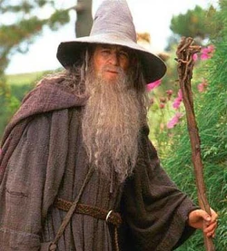
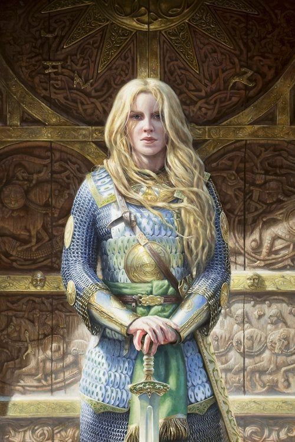
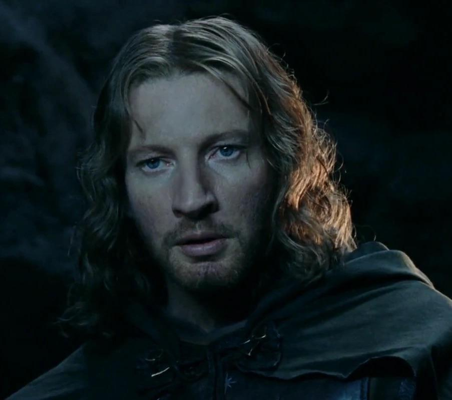

CONOCE A NUESTROS GUÍAS
Gandalf el Gris
Biografia:Un sabio mago que ha viajado por toda la Tierra Media, conocido por su astucia y poder.
Especialización:Montañas y antiguas ruinas.
Descripción de su rol:Guiará a los viajeros a través de caminos peligrosos y les enseñará sobre la historia y los secretos de la Tierra Media.
Legolas
Biografia:Príncipe del Bosque Negro, experto en el rastreo y la arquería.
Especialización:Bosques y fauna.
Descripción de su rol:Con su aguda percepción, ayudará a los viajeros a descubrir los misterios del bosque y a moverse silenciosamente entre la flora y fauna.
Gimli

Biografia:Guerrero valiente de la raza enana, conocido por su lealtad y su destreza en el combate.
Especialización:Minas y terrenos rocosos.
Descripción de su rol:Guiará a los viajeros a través de las antiguas minas enanas y compartirá historias de batallas pasadas y tesoros ocultos.
Aragorn
Biografia:Heredero al trono de Gondor, un experto en supervivencia y liderazgo.
Especialización:Caminos y rutas antiguas.
Descripción de su rol:Proveerá consejos sobre la supervivencia en la naturaleza y liderará a los viajeros a través de tierras desafiantes.
Éowyn
Biografia:Valiente mujer de Rohan, conocida por su destreza en la batalla y su espíritu indomable.
Especialización:Llanuras y terrenos abiertos.
Descripción de su rol:Inspirará a los viajeros con historias de valor y les enseñará sobre la cultura de Rohan mientras exploran las llanuras.
Faramir
Biografia:Hermano de Boromir, conocido por su inteligencia y su lealtad a Gondor.
Especialización:Estrategia y tácticas de supervivencia.
Descripción de su rol:Ofrecerá consejos sobre cómo navegar en situaciones difíciles y compartirá su conocimiento sobre la historia de Gondor y su gente.